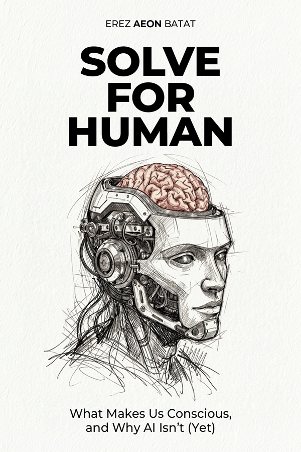

Test your mind · about 5 minutes · 20 questions
Map Your Mind
Close your eyes and picture a friend's face. Some people see it in full color. Some see nothing at all and simply know what that friend looks like. Both are normal, and almost nobody realizes how different everyone else is. Let's find out where you land.
01 · Mind's eyeFaces, sunrises, front doors
02 · Inner voiceThe narrator, if you have one
03 · Other sensesSongs, coffee, lemons, sand
04 · Time & thoughtHow fast your mind runs
Your answers never leave this page. Nothing is stored and nothing is sent anywhere. Close the tab and it all evaporates, like a dream you meant to write down.
Mind's eye
Your map is ready
You are The Silent Knower
Your zone
The Silent Knower
Pictures0
Words0
Thought speed0
The four zones

Curious why minds differ this much?
It's the subject of Solve for Human: What Makes Us Conscious, and Why AI Isn't (Yet).
For curiosity, not a diagnosis. This is a playful self-portrait, not a clinical or validated test. If something here sparks a real question about your mind, a qualified professional is the right next stop.